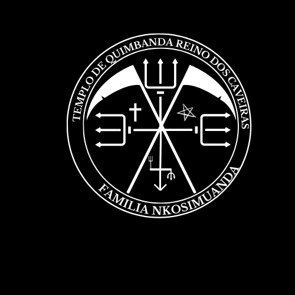

Origem culto da quimbanda Quimbanda : É um sistema de crenças e práticas espirituais que se originou no Brasil, misturando elementos de religiões africanas (particularmente dos povos Bantu e Kongo) com influências indígenas e europeias. A Quimbanda frequentemente envolve possessão espiritual, rituais e a veneração de ancestrais e entidades e trabalhos espirituais (Exus e Pomba Giras).
